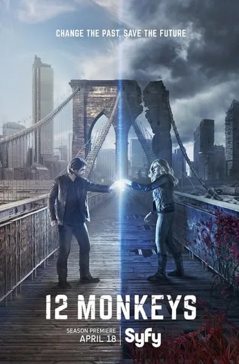

Сериал · 2015 · Драма, Фантастика
Сериал-адаптация фильма Гиллиама, переросшая за четыре сезона в самостоятельную и более цельную историю: ученый из будущего отправляется в прошлое, чтобы остановить вирус, уничтоживший человечество. Временные петли множатся, а персонажи обретают глубину: Кассандра Рэйли и Джеймс Коул оказываются втянуты в игры, полные парадоксов и созданные с любовью к деталям, свойственной истинным фанатам. Это один из тех редких случаев, когда сериал по мотивам фильма оказался ничуть не хуже оригинала.
A series adaptation of Gilliam's film that grew into its own, more coherent story across four seasons: a scientist from the future is sent to the past to stop the virus that wiped out humanity. The time loops multiply, and the characters come alive: Cassandra Railly and James Cole end up in games with a fan's love of detail and constant paradoxes. One of the rare cases where a series from a film turned out just as good as the original